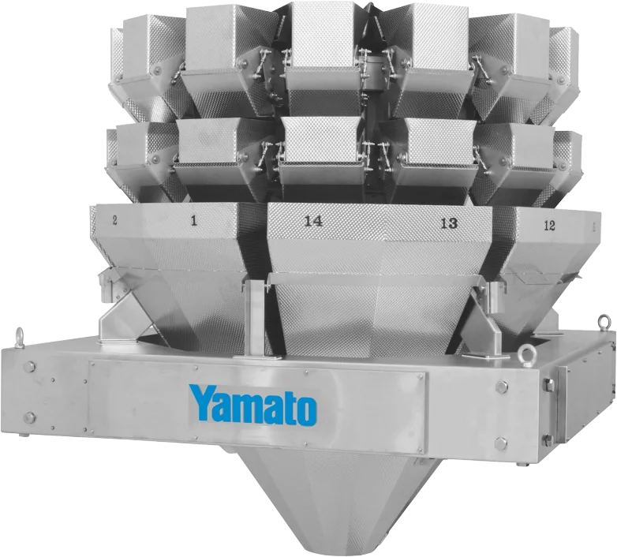

Model uniwersalny · waga wielogłowicowa
Yamato Epsilon
Główny model w naszej ofercie. Porcjuje wiele rodzajów produktów — w przemyśle spożywczym i w wybranych zastosowaniach przemysłowych. Konfigurację dobieramy do konkretnego produktu i procesu pakowania.
Przykładowe zastosowania
- Przekąski
- Orzechy
- Płatki i produkty sypkie
- Słodycze
- Rośliny strączkowe
- Suszone owoce
- Karma dla zwierząt
- Wybrane produkty mrożone
- Drobne elementy przemysłowe